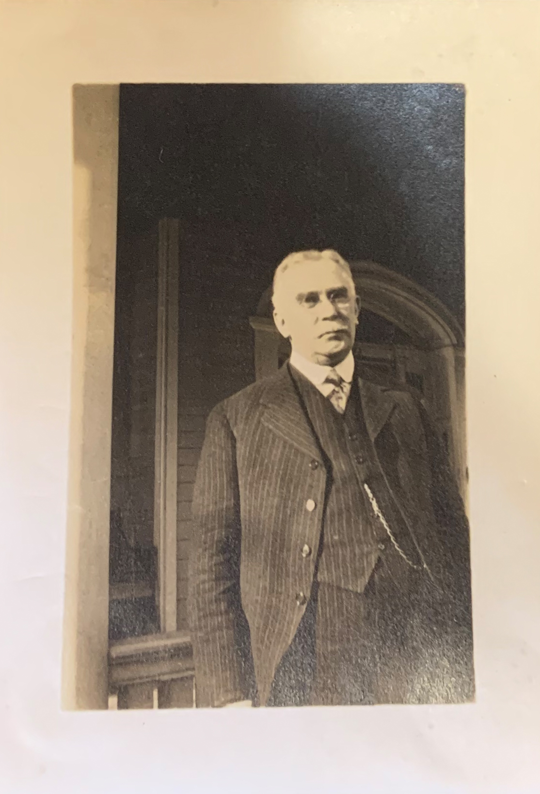
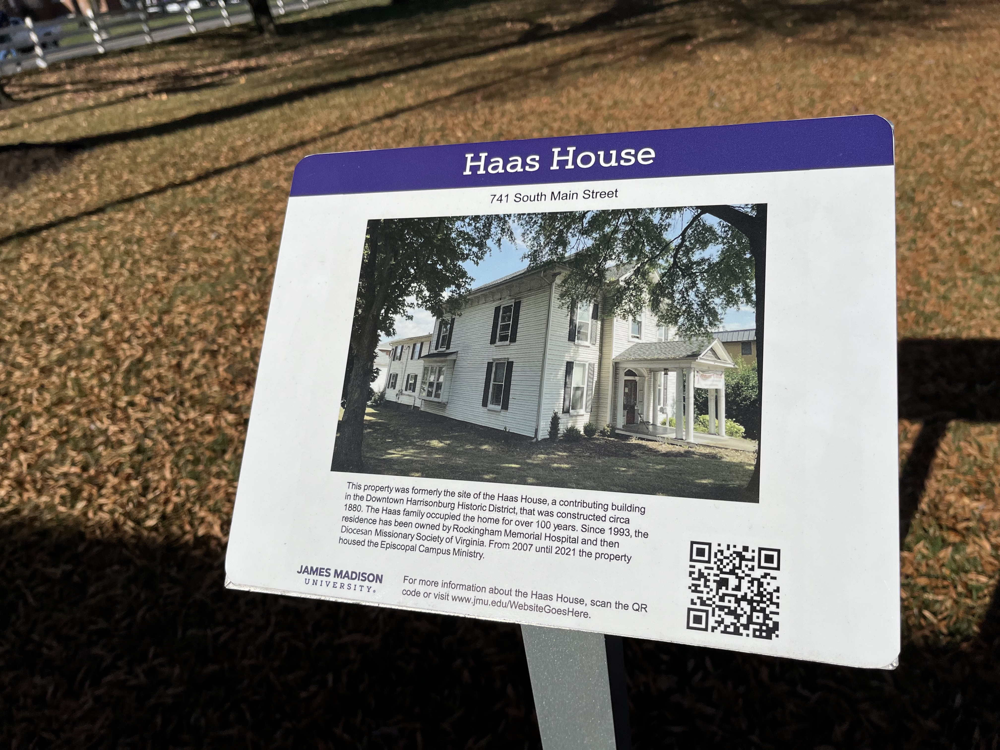

During Haas’ time as a judge, according to the article Sketches of Harrisonburg by Kirby S. Bassford, one trial had an African American prisoner locked in a cell while a mob gathered outside, demanding that he be killed. Haas mounted the jail steps and convinced the mob to disperse, letting the law run its course.
While T.N. Haas passed at the age of 74, his son, Hamilton Haas, followed in his father’s footsteps, becoming another lawyer in Harrisonburg. He continued to live in the South Main Street home, keeping the family legacy of the home, and worked closely with Emmanuel Episcopal Church. In 1993, the property was then donated to Rockingham Memorial Hospital and would go on to swap ownership multiple times before eventually being sold to JMU in early 2022.
In 2006, Canterbury Episcopal Campus Ministries moved into the Haas House after JMU acquired their previous residence just two blocks down South Main Street. As the last group to occupy it, they had the final understanding of it.
“It just had a really warm inviting feel to it,” Laura Minnich Lockey, the campus missioner for canterbury, said. “It didn't matter if you came in the kitchen door, if you came in the front door, it just felt really inviting and… there were some beautiful architectural appointments to it.”
“All the downstairs, all of the floors had a different parquet and oak parquet design in them, and they'd been really well kept up,” Minnich Lockey continued. “The front room on the left had these old pocket doors and they were like 11 feet tall, they were enormous, and it invited you into what had originally been…the men's parlor.”
With the change in ownership, various modifications were applied to the house to fit the needs of its tenants. The hospital opened rooms upstairs for patients, while Canterbury altered walls to create chapel meeting space.
“I love that building and you know... it was a wonderful place to do ministry, to welcome people in and it makes me very sad ... that it got demolished,” Minnich Lockey said.
The university allegedly planned for the house to be kept as a meeting place for a JMU campus ministry, according to the Daily News-Record (DNR). This plan came crumbling down, quite literally, in February 2022 when the structure was demolished.
The road to demolition started Jan. 31, 2022, when a demolition permit was filed by the university. This proposal was a shock to some community members.
“I don’t see the practical purpose of tearing it down myself,” Jody Meyerhoffer, resident and historian, said in a DNR article.
The Harrisonburg Downtown Renaissance (HDR), which was “created to reactivate the downtown historic district as the economic and social hub of Harrisonburg,” was just one of the entities actively questioning JMU’s reasoning for filing the permit, as there was no previous announcement on any foundational issues. JMU said that it was the only remaining option.
 “The Haas House was no longer a viable structure according to a detailed engineering analysis conducted by JMU Facilities Management,” Andy Perrine, JMU associate vice president for communications and marketing in the division of advancement and current HDR board president, said.
“The Haas House was no longer a viable structure according to a detailed engineering analysis conducted by JMU Facilities Management,” Andy Perrine, JMU associate vice president for communications and marketing in the division of advancement and current HDR board president, said.
But some previous residents contest these assertions. Minnch Lockey said it was “solid as a rock.”
“We had an engineer come and check out the house and they said the house was fine, that those were noise vibration cracks from the explosions [and] that it did not hurt the foundation of the house,” Minnich Lockey said.
Knappenberger described the demolition as “egregious,” explaining that “not only was it livable in the very recent past … but it was the way in which they did it.” He specifically noted the importance of the “big, beautiful glass door” which was worth approximately $10,000.
“[JMU has] so much money, so many other big projects going on … What’s $10,000 to them?” Knappenberger said.
The JMU Facilities Management team conducted the analysis according to commonwealth guidelines, which concluded the structure was “too far gone to save.” As a leader for both JMU and HDR, Perrine was front and center for the HDR’s appeals against JMU’s decision to demolish the Haas House.
“Being part of both JMU and HDR leadership, I was in the unique position to watch and help guide a process that sought to understand and resolve differences in a very committed relationship between two local institutions,” Perrine said. “While our two organizations were at cross purposes on the Hass House in particular, we are in consonance on so many other objectives related to civic and economic vitality.”
The HDR reaffirmed this positive relationship with JMU, as leaders such as Andrea Dono, executive director of HDR, reflected on their exchange with the university over preservation of the South Main property.
When JMU decided to demolish, it notified the Virginia Department of Historic Resources (DHR). The DHR did an inspection of the building and advised against JMU’s plan as it would adversely impact the historic district. Instead, it recommended mitigation, including the creation of a sign and historical documentation. Yet, JMU went against the recommendation and proceeded in their plans.
In a last-ditch effort to save the Haas House, the DHR proposed that the house be put on both the national and Virginia registry for landmarks and historic places. However, the house was deemed “not significant enough” to protect.
“The HDR is disappointed that JMU declined to care for this historical resource or find a creative way to adapt it to fill a university need,” Dono wrote in a statement after the house’s destruction. “We believe that owners of historic properties should be held to a higher standard as they are no longer simply property owners, but they are stewards of our shared history.”
Following the demolition, Dono and HDR have been working on developing a city ordinance for a historic district in Harrisonburg, to help protect historical buildings in the future.
“Our biggest focus right now is to really use the momentum of people's emotional connections to another historic house being torn down in our community,” Dono said. “To reinforce the message that the only way to protect our historic buildings is to put local protections in place.”
Dono has been researching similar policies implemented in places such as Old Town Alexandria and Nantucket, where strict guidelines have been put in place so that owners of historic buildings must get permission to paint the building or replace a window. Dono explained that the goal isn’t to restrict the building owners, but to put in place a review board to evaluate actual evidence and reasoning for the destruction of historical buildings.
According to the HDR, JMU hired an engineering firm to help estimate costs, which led them to make the decision not to explore alternative options with the building. However, this report didn’t match that of a different architect's assessment of the Haas House, brought in on behalf of those trying to save the building.
Dono said after the Haas House was torn down, they received input from community members who weren’t “typically engaged” with HDR, but that felt passionately about the historic buildings. Knappenberger said a big reason people are upset is “the forgotten aspect of the history.”
“[History] should inform who we are, right? How do we know who we are? Where do we come from? Those are big questions,” Knappenberger said.
In the HDR’s written statement following the demolition of the Haas House, Dono said giving new life to old buildings helps communities celebrate history.